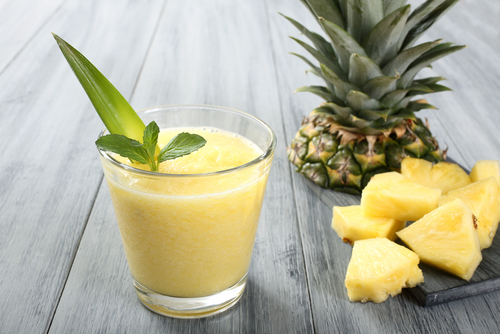
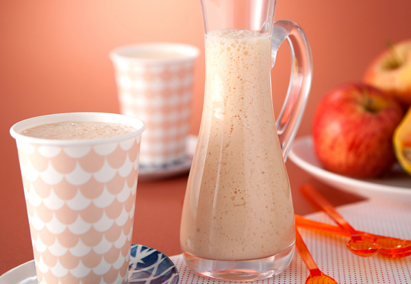
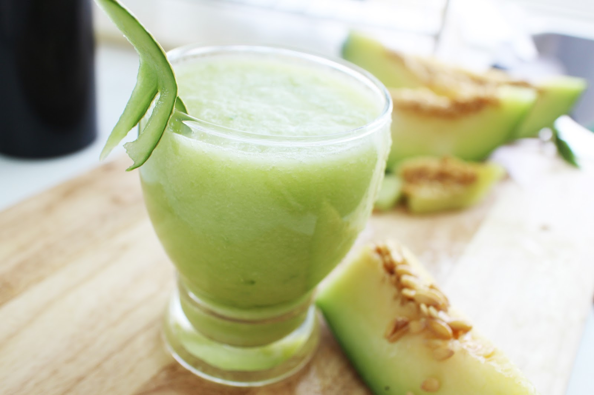
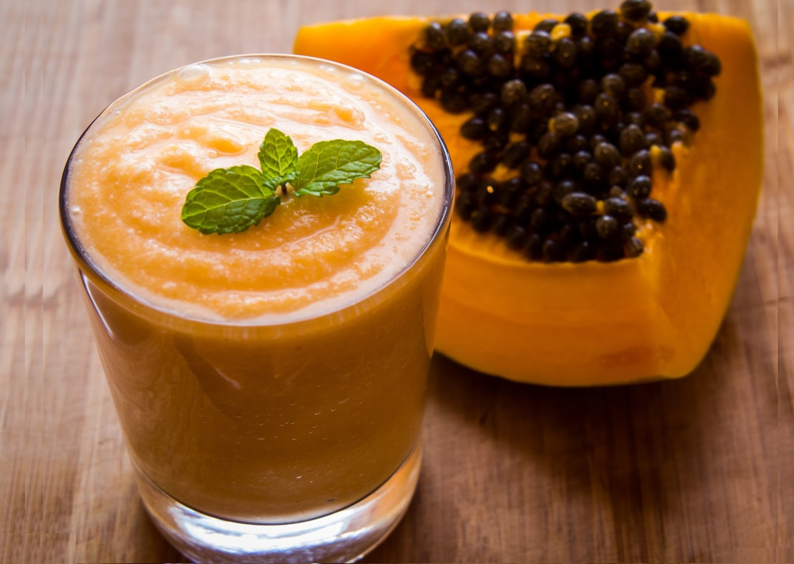
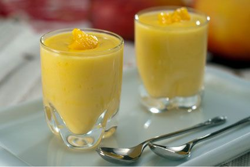

7 Receitas de Vitaminas Variadas
Vitamina de Banana

Uma fruta muito consumida em alguns países, até mesmo como acompanhamento de pratos específicos, é a banana, cujas vitaminas são saborosas e nutritivas, bem como adequadas a qualquer momento. Cada banana contém muito potássio, o que significa alto teor energético. Sua combinação com leite desnatado produz uma vitamina leve e recomendada para manter o peso ou emagrecer, complementada por exercícios.
Ingredientes:
2 bananas
200 ml de leite desnatado gelado
2 colheres (sopa) de açúcar
1 colher (sopa) de aveia
Vitamina de Morango

O morango é uma fruta multivitamínica. Possui um elevado teor de vitamina C, além de água, fibras, potássio, cálcio e magnésio, ácido fólico e vitamina E. É recomendada principalmente pela sua riqueza em minerais, vitaminas e ferro.
Ingredientes:
1 pote de Iogurte Natural
4 morangos picados
1/2 xícara de Leite desnatado gelado
2 colheres (sopa) de açúcar
3 colheres (sopa) de farinha láctea
Vitamina de Abacaxi
Se você gosta de abacaxi, então será um prazer tomar vitaminas desta fruta. O abacaxi ajuda no emagrecimento ou quando a manutenção do peso ideal faz parte de um estilo de vida. A vitamina dessa fruta tem sabor diferente com iogurte natural e um pouco de mel, em vez de leite. Adicione um pouco de suco de laranja para evitar que a massa fique muito espessa. É possível que, após experimentá-la, a vitamina se torne um vício diário.
Ingredientes:
1 xícara (chá) de abacaxi picado
2 xícaras (chá) de leite
2 colheres (sopa) de açúcar
1 colher (chá) de essência de baunilha
Vitamina de Maçã e Laranja
A maçã é uma fruta bem nutritiva e há muitos benefícios para a saúde. A laranja é um fruto rico em sais minerais como fósforo, cálcio e ferro. Além dos sais minerais, a laranja é rica em vitamina C, possuindo também uma boa quantidade de vitaminas A e do complexo B. É uma fruta pouco calórica, possuindo aproximadamente 40 calorias por 100 gramas.
Ingredientes:
1/2 maçã picada
Suco de meia laranja
200 ml de leite desnatado
1 colher (de sopa) de mel
Vitamina de Melão e Limão
É uma vitamina única, especial e incrivelmente refrescante para o verão, saborosa se preparada com iogurte natural e um pouco de leite desnatado. Remova as sementes do melão antes de bater os pedaços da fruta no liquidificador. Um pouco de limão dará um toque interessante e diferente ao paladar. Comer bem e viver melhor, e de acordo com sua forma e seu estilo de vida fica mais simples.
Ingredientes:
1/2 melão
250 ml de leite desnatado
Suco de 2 limões ou mais conforme o gosto
Açúcar a gosto
Gelo
Vitamina de Mamão
O mamão é rico em nutrientes, é rico em antioxidantes, vitaminas do complexo B, ácido pantotênico e ácido fólico e os minerais, potássio e magnésio além de fibras. Juntos, estes nutrientes promovem a saúde do sistema cardiovascular e também oferecem proteção contra o câncer de cólon. Além disso, papaia, como é comumente chamado, contém a enzima digestiva papaína, que é usada para tratar lesões esportivas, outras causas de trauma e alergias. Vitamina C e vitamina A, ambos são necessários para o bom funcionamento de um sistema imunológico saudável. Mamão pode, portanto, ser uma escolha de fruto saudável para prevenir doenças como infecções
Ingredientes:
1/2 mamão papaya
200 ml de leite desnatado
1 e 1/2 colher (sopa) de açúcar
1 colher (sopa) de farinha láctea
Vitamina de Manga
Fruta rica em uma variedade de fitoquímicos e nutrientes, a polpa da manga é rica em prebióticos, fibras alimentares, vitamina C, polifenóis, carotenóides e provitamina A. Além disto, a fruta tem muitas propriedades benéficas para saúde, tais como: ajuda a purificar o sangue, diurético, combate a bronquite, tem efeito expectorante e combate a acidez estomacal.
Ingredientes:
1 manga (polpa)
2 colheres de aveia em flocos ou farelo
1 colher de mel
200 ml de leite de sua preferência (desnatado, soja, amêndoas, arroz, aveia, etc.)
Gelo a gosto